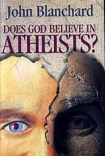
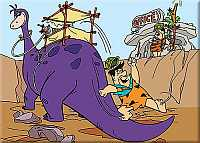
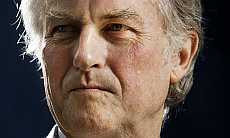
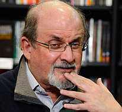

“Tratemos de enseñar la generosidad y el altruismo porque nacemos egoístas”.
—Richard Dawkins
El rechazo social duele; su padecimiento es físico y lastima de verdad. De hecho, experimentos han establecido que existe una superposición neural entre el rechazo social y el dolor físico en las mismas regiones del cerebro que se activan cuando las personas experimentan sensaciones dolorosas en su cuerpo. Estas regiones son la corteza somatosensorial secundaria y la ínsula posterior dorsal.
Precisamente, si una cosa he aprendido durante todos estos años de lectura en el desarrollo científico, es que la relación entre la biología y el medio es poderosa, el lazo es enérgico y la responsabilidad de sus efectos varía en grado pero nunca rompe el vínculo. Somos el resultado de combinaciones de moléculas que se mueven en un medio específico y evolucionan produciendo cambios con el fin de adaptarse mejor a ese medio. Nosotros los humanos tenemos ciertas curiosas características si nos comparamos con los demás primates: no tenemos buenas garras, no estamos forrados de pelo y nuestra niñez es demasiado larga. En reales palabras, somos unos animales débiles que nos favorecemos con el contacto social, sin el grupo, nuestros bebés mueren. Por otro lado, nuestra más compleja herramienta, el cerebro, es capaz de cocer pociones mediáticas realmente confusas. Al principio, las necesidades de la especie eran mucho más básicas y activas, se necesitaba del grupo para sobrevivir y continuar propagando genes. En la actualidad, las cosas han cambiado tan magníficamente como el número de Homo sapiens sobre el planeta.
El rechazo, sin embargo, sigue siendo parte de lo que somos. En tiempos prehistóricos, el animal que era arrojado del grupo tenía pocas posibilidades de sobrevivir. En esas pequeñas tribus, el mundo social se forma en relación con la autoridad adquirida por cada animal dentro de la sociedad; el líder se ganó el título debido a alguna fortaleza y se toma ciertas libertades por ello; la matriarca en el conjunto también lo hace, otorgando permisos, silenciando y promoviendo actitudes. Mientras más habilidades tengas que ayuden al grupo como entidad (de cualquier tipo, las habilidades para engañar también tienen éxito), más aceptado te sentirás.
Los humanos actuales somos diferentes. Y aunque el quid del asunto continúa girando sobre las mismas necesidades, las historias, sin embargo, que giran a su alrededor son (se dificulta encontrar una palabra para describir la vida social humana en general) descomunales. El cerebro de Homo sapiens tuvo tiempo para descansar y pensar; hacer las cosas más interesantes, imaginar, inventar, estafar, maquinar, descubrir… encontró maneras de acomodarse, esclavizar y ayudar, todo en busca de la supervivencia más satisfactoria, la reproducción más placentera y las explicaciones más convenientes para los líderes; el grupo crecía y el cerebro descubría más oportunidades, entre ellas mejores formas de engañar y confabular.
La aceptación y el rechazo han sido instrumentos emocionales usados por sociedades y organizaciones totalitarias para controlar. En muchas sociedades, el rechazo continúa significando muerte, muchas veces más certera que ser echado simplemente del lugar. Hoy, hay países con normas completamente absurdas que ponen a sus pobladores en peligro sólo por tener pensamientos discordantes, por ser de un sexo diferente, por poseer una identidad sexual distinta. Hace poco, una madre cristiana fue ejecutada en Pakistán por blasfemia; para sus ejecutores musulmanes se había hecho justicia ante los ojos de su imaginado profeta, al cual la mujer, supuestamente, irrespetó. Las guerras políticas y religiosas aún no terminan y el rechazo y la aceptación son integrantes activos en ellas. Lo interesante de la parte religiosa es la manera en que la aceptación y el rechazo han sido acicalados con indumentaria sobrenatural.
Tu profeta rechaza al mío y tu aceptación de un dios pone en peligro a mis dioses. Y viceversa. Entre todas estas creencias y tradiciones (no olvidemos que existen 34,000 iglesias cristianas con normas y dogmas distintos), también existimos los ateos cuya actitud de descreencia ante todo poder sobrenatural, representa para muchos un rechazo desvergonzado hacia el poder, para ellos, mayor de todos.
“Es muy seguro que los que quieren vivir egocéntricas vidas sin Dios, han invertido bastante en ese interés de mantener a Dios fuera de sus pensamientos”, escribe John Blanchard, autor del libro ¿Cree Dios en los ateos?
Irónico que Blanchard use ese argumento en contra del ateísmo cuando somos siempre acusados de hablar “demasiado” de los dioses. Dos extremos que indican los reales motivos de estas personas: defender su aceptación del dios en el que creen ante cualquiera y como sea. Es bastante entendible, es lo que yo hago por aquí, planteo mi punto de vista, mis pensamientos y las investigaciones que los sustentan. Nada malo en eso, de hecho, todos necesitamos la libertad para hacerlo, es la mejor forma para que un grupo social crezca fuerte y se desarrolle sanamente: permitiendo que sus contribuyentes sean libres de creer lo que deseen.
Pero es aquí donde nos encontramos con el primer problema. Muchas de estas creencias surgen de ideas que promueven el odio y la división y, como dije antes, en distintos países se utilizan diversas formas de coerción para mantener en vilo a los que no creen en el ser sobrenatural de turno, y el rechazo es una de ellas. Es el ejemplo del doctor estadounidense John Bechtle, de ChristianAnswers.net, quien ataca a todos los que no creen en la infalibilidad de la Biblia, no sólo los ateos sino los agnósticos, todo tipo de humanistas, cristianos liberales y todos los que creen en otras escrituras.
“Cada generación rechaza las escrituras más y más debido a que bloquea el camino hacia sus propias opiniones”, escribió el médico.
Pero es imposible creer que la tierra tiene unos pocos miles de años. Los creacionistas le echan menos edad que la especie misma; de hecho, tienen un museo en Estados Unidos donde los dinosaurios comparten con los primeros humanos al estilo Yabadabadú. Las historias en la Biblia son insostenibles como prueba científica de algo, están equivocadas y existen evidencias para demostrarlo (aunque para observarlo no se necesitan pruebas). Ahora bien, si tu personalidad extrae de allí nutrientes para crecer junto a un alma sobrenatural, los que no lo necesitamos no deberíamos de impedírtelo; desafortunadamente, es aquí donde comienzan los problemas. Las religiones han utilizado el poder para hacer el mal. Como en una película de aventuras de Hollywood, los religiosos han hecho el papel de malvados y lo han hecho bien; ganando premio a la crueldad con inquisiciones varias. Por eso vemos a tantos ateos escribiendo y hablando sobre ello; de hecho, soy la primera agradecida. Las ideas deben transmitirse y dejar que los demás tengan libre acceso a ellas. Somos adultos y estamos todos descubriendo cosas nuevas desde el planeta, bajar una cortina frente a la investigación y los hechos sólo dificulta nuestro paso por el mundo, no el paso de los hechos. La información real continuará estando allí la descubramos o no, la transmitamos o no, que algún humano la sepa o no; de la única forma que madurará la especie es si dejamos de comportarnos como niños sin pista alguna sobre todo. Es sumamente importante conocer, por eso la evolución del conocimiento científico hacia el público en general, aunque a veces surta el efecto contrario, ha sido realmente liberadora, permitiendo que una de las más interesantes faenas humanas sea del dominio de todos.
“¿Qué ha dicho la ‘teología’ que sea de la más pequeña utilidad para nadie? ¿Cuándo ha dicho la ‘teología’ algo que sea una verdad demostrable y que no sea obvio? ¿De hecho, qué te hace pensar que la ‘teología’ sea siquiera una asignatura?”
Estas palabras del científico Richard Dawkins son completamente necesarias; ya sea para asimilarlas, refutarlas, digerirlas, criticarlas, procesarlas intelectualmente… Autores ateos como Dawkins, tienen la responsabilidad de transferir esos conceptos que han conformado sus cerebros como productos de una vida en la ciencia, la filosofía y la lectura. Oponernos a esa libertad es condonar desde el asesinato hasta el rechazo completo a una idea, aunque sea de forma ficticia como ocurrió con el escritor Salman Rushdie. Oponernos a esa libertad es prolongar la tonta infancia del Homo sapiens, la especie que se niega a crecer y prefiere esclavizar y matar antes que tomarse un tiempito para pensar.
Esa noción sobrenatural que conlleva al rechazo a los ‘distintos’, es malvada. Si la religión desea avanzar, la necesidad de desatarse de la literalidad de escritos y cuentos antiguos es obligatoria. Ahora bien, si necesitas creer que tu ropa interior es mágica, que tu profeta cambia el agua a vino y que un ser extraterrestre es tu padre (no hablo de los Skywalker), es ineludible la libertad para hacerlo, pero esa libertad no puede pasar de tu puerta; esa libertad no debe invadir organizaciones públicas; esa libertad no debe significar el rechazo social a los demás; no debes abanderarte con esa libertad para arrebatarle la del otro; no debe alguien perder su vida, su empleo, sus amigos y familiares debido a lo que llamas tu libertad; la que has transformado, nuevamente, en cruel opresión.
Por eso muchos hablamos y escribimos sobre estos temas, no sólo los ateos. Es por eso que existe el laicismo, porque es justo y es para todos. Es imposible evitar completamente el rechazo, todos lo sentiremos varias veces en la vida; no obstante, tenemos la capacidad cerebral suficiente para comprender cuando el rechazo es inmerecido, para estudiar el pasado y comparar similitudes; para no tropezar con la misma piedra. Desafortunadamente, dicha capacidad parece ir en contra de variables en nuestra biología y medio; así, el papá abusado, abusa de su hijo.
Para romper con estos círculos viciosos necesitamos aprender que la información, aunque no está ahí para herirnos, incontables veces lo hará. Sin embargo, es la única oportunidad que tenemos para crecer y aceptar con tolerancia, las realidades de los demás.
El ateísmo teje una inofensiva aunque cruda realidad utilizando las evidencias y la información sobre el pasado. En mi opinión, es la inexistencia de lo sobrenatural lo que hace aún más majestuosa la vida.
Lo que deberíamos aceptar son las robustas evidencias
El ateo no es humano, asegura un ‘reverendo’
La aceptación y el rechazo no son exclusivos de nadie. Ocurre tanto entre dos personas como entre dos naciones, son parte de nuestro léxico humano y el motor que mueve muchas de nuestras decisiones. También son imposibles de evitar. No obstante, el ser humano puede manipularlas, como lo ha estado haciendo todo el tiempo; lo ideal sería que la manipulación ofreciera ganancias para todos y actuara como freno hacia la formación de prejuicios. Puedes refutar una idea, pero no rechazar a la persona por tenerla, hasta poner en peligro su propia existencia.

Pero cómo vivir en el idealismo de ‘justicia para todos’ cuando hay cerebros a tu alrededor con pensamientos sobre ti basados en superficialismos y sus propias inseguridades. Una de las más absurdas que he leído tiene que ver con el duelo. Algunas personas me han comentado que no saben cómo un ateo puede vivir con la noción de que la muerte es el final y que nunca más volverá a ver a sus seres queridos después que mueren. Por el momento, no existe un estudio que muestre que el ateo sufre más que el creyente con la muerte de sus seres queridos. En mi opinión, no existe tal distinción y me parece que es una cuestión cultural la forma como las poblaciones reaccionan a ese dolor; individuos en algunas tribus cantan y bailan, otros se tiran desesperados al suelo a llorar, otros son mucho más estoicos.
Ahora bien, uno de los comentarios más absurdos que he leído al respecto se lo otorgo al reverendo del ministerio anglicano en Estados Unidos, Gavin Dunbar. Para Dunbar, el ateo es incapaz de sentir dolor cuando pierde a un ser querido.
“El ateo no puede dar ninguna razón para su duelo, ni una razón por la que llora ni puede decir por qué respeta el dolor de los demás. Atravesar por el duelo es afirmar que existe una fuente mayor más allá del ‘gen egoísta’”.
¡Pues, vaya imbecilidad! Puedo entender perfectamente el primer cuestionamiento de que sintamos más dolor precisamente porque no creemos que volveremos a ver a los que mueren; pero no le veo ni pies ni cabeza a su absurda propuesta: entonces, ¿no somos los ateos capaces de amar ni de sentir? Es precisamente este tipo de burradas las que invitan la entrada triunfal del prejuicio; es cuando los cerebros que sólo procesan las palabras de esas ‘autoridades’ que les enseñaron a respetar desde niños, comienzan a discriminar. A rechazar sin pensar por qué, a decir tonterías que no están cimentadas en la lógica ni el racionalismo.
“Como atea, he sido blanco de la intolerancia, la hostilidad, incluso de odio y amenazas de violencia. Pero rara vez he encontrado un crítico del ateísmo tan dispuesto a negar incluso mi humanidad básica y argumentar que porque soy atea veo como una ilusión la moral y la virtud, el amor, la amistad y el dolor. Estoy de acuerdo con Dunbar de que el dolor es una de las cosas que nos hace humanos… por eso me llena de rabia que diga que porque no creo que un alma mágica anima mi cuerpo, porque no creo que ‘voy a ver a mis seres queridos muertos en un lugar invisible donde seré para siempre feliz’, soy de alguna manera incapaz de experimentar lo esencial de la humanidad. Mi primera reacción al leerlo fue más o menos gritar ‘Fuck you’ a la pantalla de mi ordenador”, escribió para Salon y AlterNet, Greta Christina.
Si no piensas como yo, ni siquiera eres humano. En mi opinión, lo terrible es que tengamos todos que compartir la especie con tan irascible animal.
“Ser rechazado es malo para la salud”, dice Nathan Dewall, psicólogo de la Universidad de Kentucky. “La exclusión también se asocia con mala salud mental y los problemas de exclusión y de salud mental pueden unirse en un ciclo destructivo”.
Si, además de eso, enfrentas la muerte o la prisión si te presentas como realmente eres, no es posible esperar un comportamiento efectivo ni satisfactorio del pobre animal.
¿Podría Dunbar aprender de una actitud opuesta a la suya por parte de los ateos? Lo dudo mucho, aunque, realmente, no ayuda a nadie comportarnos de forma tan obtusa como el reverendo. Lo que no debemos es mantener el silencio respecto a sus ilógicos pensamientos, ni dejarnos acallar por los demás o ser el blanco de discriminaciones; es inadmisible lo que dicen muchos de estos líderes creyentes, acusándonos de satánicos o guiados por el diablo, inmorales, perversos, incapaces de ningún tipo de sentimiento y más que nada irresponsables porque no creemos en verdades absolutas dictadas por otros humanos hace miles de años o hace sólo unos cuantos años en un libro de ciencia-ficción.
“A veces me parece que muchos creyentes andan avergonzados de todos esos disparates en los que creen. Pero soy yo, pienso así porque yo lo estaría, por eso no puedo creer; nada de eso tiene sentido”, manifestó el otro día una amiga psicóloga.
Es una empresa imposible eliminar nuestras diferencias. Los desacuerdos surgirán en todos los medios, no sólo entre empresas y creencias distintas sino en el núcleo de las mismas. Nuestra naturaleza nos permite arraigar un sistema de aseveraciones fundamentales que luego es difícil de abandonar. Precisamente por eso, entre los objetivos del ser humano deben encontrarse el de mantenerse abierto al cambio, utilizar las partes más racionales de sus cerebros y aceptar con el tiempo las más robustas evidencias.
Volver al índice de la Lupa Herética
© 2008-2025 Glenys Álvarez y Sin Dioses. Prohibida la reproducción con fines comerciales.
Comentarios
Comments powered by Disqus